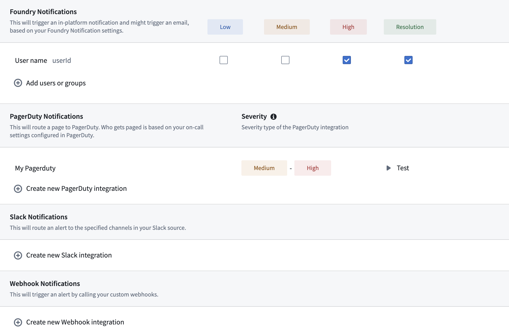
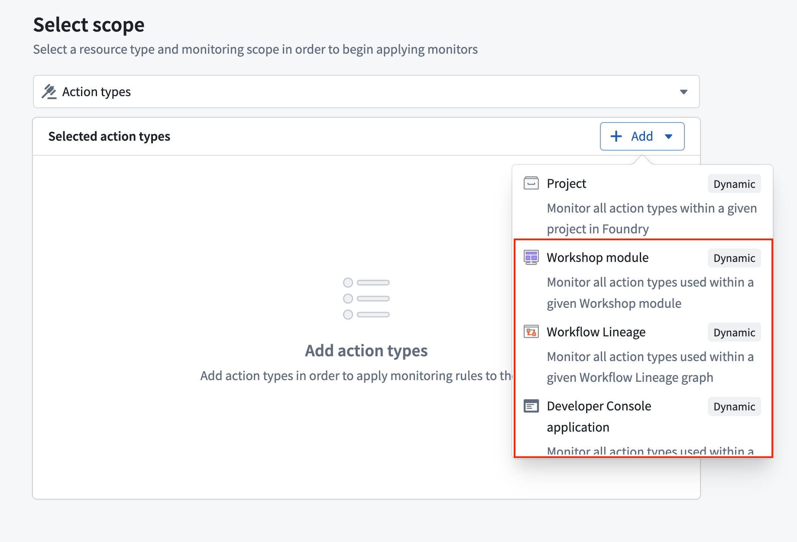

Actions in Foundry can be monitored to track performance and reliability. This page explains the available monitoring capabilities for actions.
Action monitoring in Foundry supports two key rule types:
For detailed configuration options and parameters, review our monitoring rules reference documentation..
To set up monitoring for your actions, follow the standard process for creating monitoring views and rules:

Action monitors support Workflow Lineage, Workshop, and OSDK application as dynamic scopes. When you select one of these scopes, the monitor automatically tracks all actions the scoped resource uses and adjusts as actions are added or removed without further intervention.
